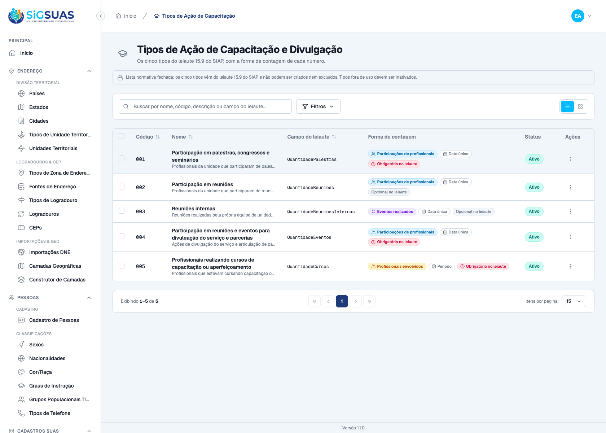
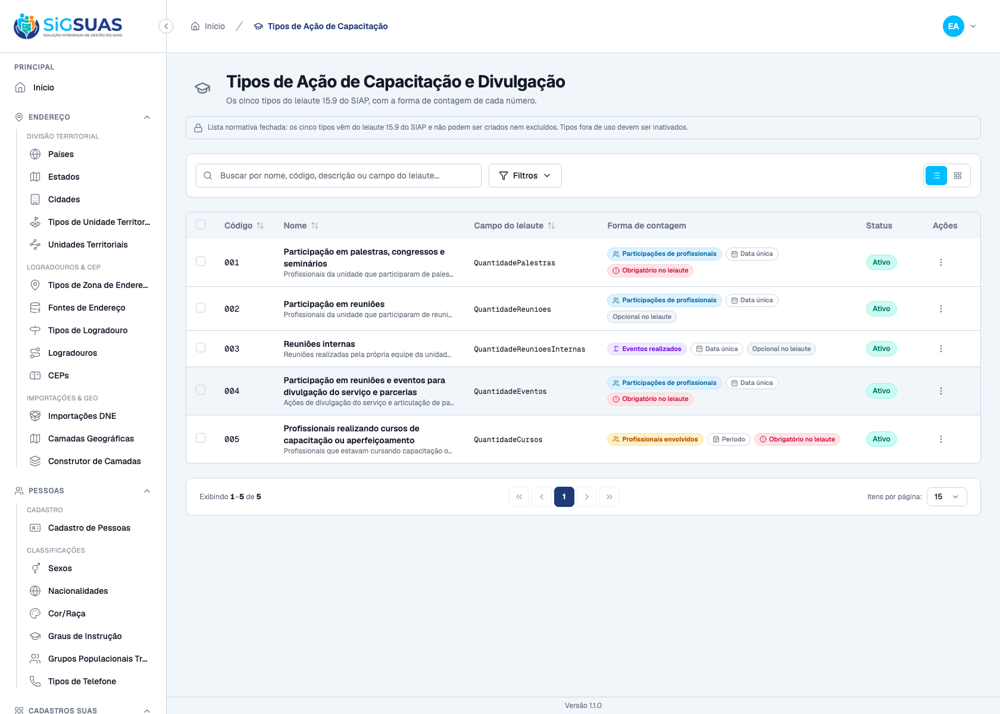
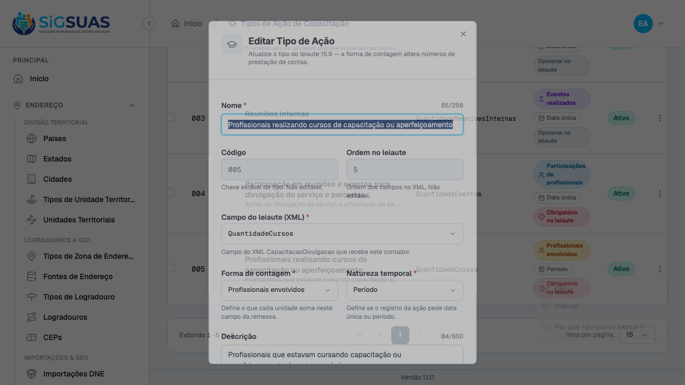
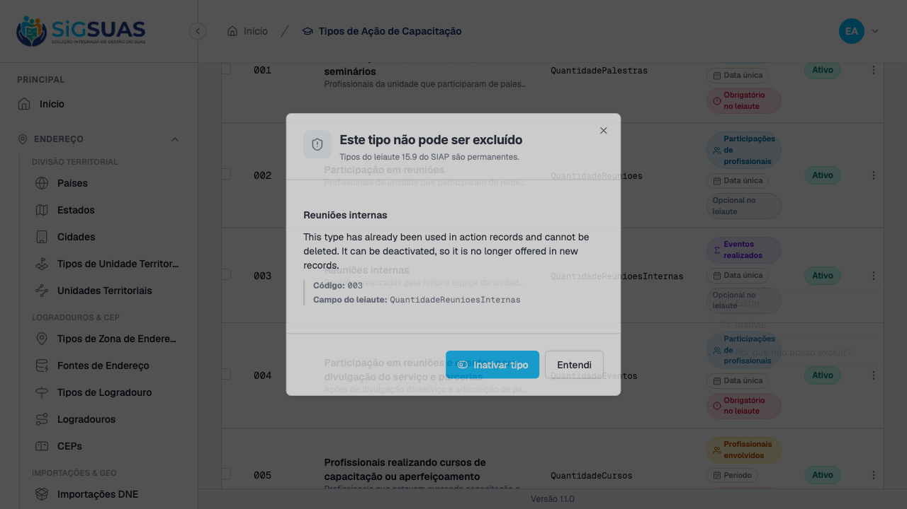
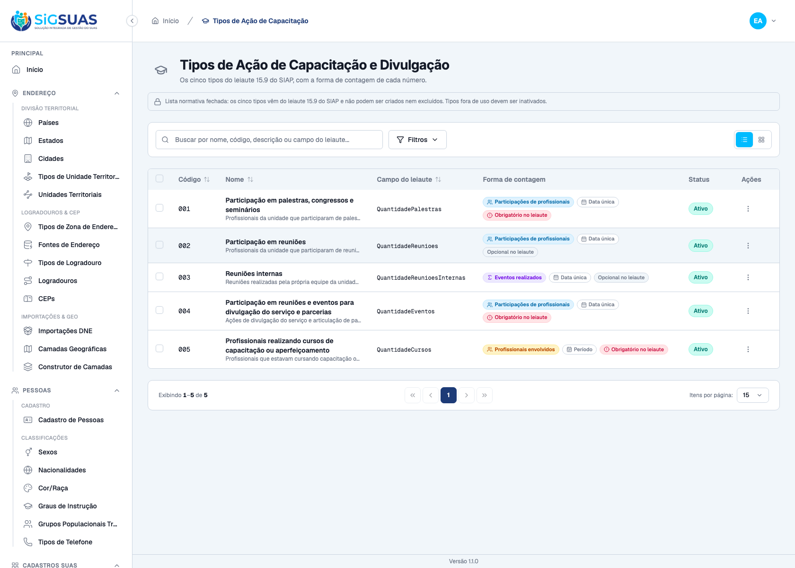
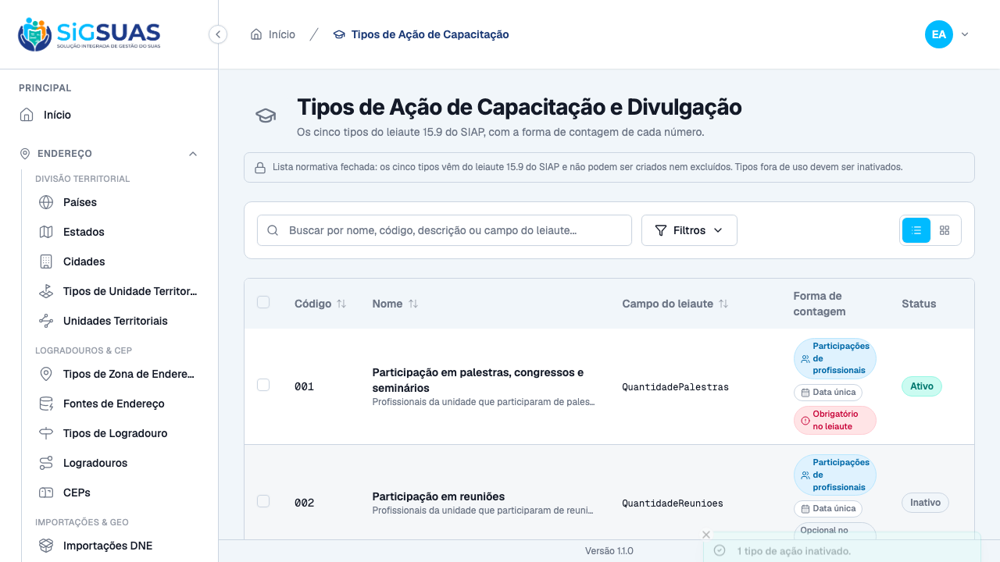
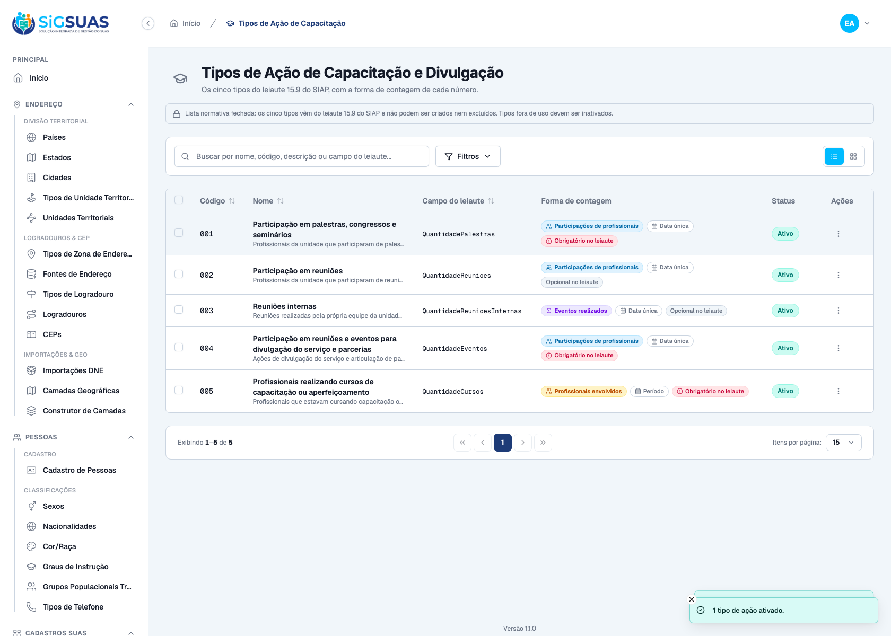

Relatório de Critérios de Aceite — US-CAPAC-01
Resumo
Oito critérios. Seis com evidência no navegador (Painel Global, guard manager) gravada pelos 4 casos de tests/lookups/capacitation-action-types.spec.ts, todos aprovados; os seis também têm contraparte na suíte Pest. Dois critérios — CA05 (o município não edita a lista) e CA08 (auditoria da alteração em activity_log) — não têm tela própria e ficam exclusivamente com a evidência automatizada do anexo. Nenhum critério ficou sem evidência. Complemento de 04/09/2026: o apêndice passou a incluir também a suíte da apuração, que é onde se prova a segunda metade do CA07 — a de que um tipo inativado continua contando no período em que foi usado. O anexo fecha com 50 testes e 200 asserções, todos verdes.
| CA | Critério | Status |
|---|---|---|
| CA01 | Cinco tipos disponíveis (happy path) | ATENDIDO · navegador + automatizado |
| CA02 | Forma de contagem visível em cada tipo | ATENDIDO · navegador + automatizado |
| CA03 | Obrigatoriedade no leiaute visível | ATENDIDO · navegador + automatizado |
| CA04 | Natureza de duração no tipo de cursos | ATENDIDO · navegador + automatizado |
| CA05 | Município não edita a lista | ATENDIDO · automatizado |
| CA06 | Tipo em uso não é excluído | ATENDIDO · navegador + automatizado |
| CA07 | Tipo inativado continua no histórico e na apuração | ATENDIDO · navegador + automatizado |
| CA08 | Alteração auditada | ATENDIDO · automatizado |
CA01 — Cinco tipos disponíveis (happy path) ATENDIDO · navegador + automatizado
Critério (Gherkin): Dado que sou Administrador autenticado no guard manager Quando eu chamar GET /api/capacitation-action-types Então recebo 200 com exatamente 5 itens E cada item traz uuid, code, name, siap_field, counting_mode, date_mode, is_required_in_layout e is_active
Como foi testado: Playwright, autenticado como Super Admin (guard manager): abrir /app/capacitation-action-types, aguardar o GET /api/capacitation-action-types e conferir a resposta 200. O caso assevera cinco linhas, na ordem de sort_order (= ordem dos campos no XML), e que a coluna “Campo do leiaute” traz exatamente QuantidadePalestras, QuantidadeReunioes, QuantidadeReunioesInternas, QuantidadeEventos e QuantidadeCursos. Assevera também a ausência de qualquer botão “Novo” e a presença do aviso de lista fechada.
- A listagem traz exatamente 5 tipos, códigos 001…005 na ordem do XML, cada um com o seu campo do leiaute.
- O aviso “Lista normativa fechada: os cinco tipos vêm do leiaute 15.9 do SIAP e não podem ser criados nem excluídos. Tipos fora de uso devem ser inativados.” está visível no topo.
- Nenhum botão de criação existe na tela (asserção negativa toHaveCount(0)) — a UI não promete o que a API recusa.
- Nenhum erro de console durante o carregamento.
- Pest: “lista exatamente os cinco tipos do leiaute, na ordem do XML” e “nao expoe rota de criacao de um sexto tipo”.

CA02 — Forma de contagem visível em cada tipo ATENDIDO · navegador + automatizado
Critério (Gherkin): Dado que estou consultando o cadastro Quando eu abrir o tipo de code "001" (Participação em palestras, congressos e seminários) Então counting_mode é "participation" E o tipo de code "003" (Reuniões internas) tem counting_mode "event" E o tipo de code "005" (Profissionais realizando cursos) tem counting_mode "professional"
Como foi testado: No mesmo listado, conferir o badge “Forma de contagem” linha a linha (data-code é a chave estável) e, em seguida, abrir o detalhe do tipo 005 pelo menu da linha → “Editar”.
- Código 001 (palestras/congressos/seminários): “Participações de profissionais” (counting_mode = participation).
- Código 003 (reuniões internas): “Eventos realizados” (counting_mode = event).
- Código 005 (profissionais em cursos): “Profissionais envolvidos” (counting_mode = professional).
- A regra do número é legível na LISTAGEM, sem abrir registro a registro, e se repete no detalhe.
- Pest: “carrega a forma de contagem em cada tipo”.


CA03 — Obrigatoriedade no leiaute visível ATENDIDO · navegador + automatizado
Critério (Gherkin): Dado que estou consultando o cadastro Quando eu listar os tipos Então os codes "001", "004" e "005" têm is_required_in_layout = true E os codes "002" e "003" têm is_required_in_layout = false
Como foi testado: Mesmo caso do CA02: conferir o badge de obrigatoriedade em cada uma das cinco linhas e o switch “Obrigatório no leiaute” no detalhe do tipo 005.
- Códigos 001, 004 e 005 exibem “Obrigatório no leiaute”.
- Códigos 002 e 003 exibem “Opcional no leiaute”.
- No detalhe do 005 o switch “Obrigatório no leiaute” está marcado (aria-checked=true).
- Pest: “reflete a obrigatoriedade do leiaute em cada tipo” e “replica a obrigatoriedade declarada no layout” (seeder).


CA04 — Natureza de duração no tipo de cursos ATENDIDO · navegador + automatizado
Critério (Gherkin): Dado que estou consultando o tipo de code "005" Quando eu abrir o detalhe Então date_mode é "period" E todos os demais tipos têm date_mode "single_date"
Como foi testado: Mesmo caso do CA02/CA03: badge “Natureza temporal” nas cinco linhas e detalhe do tipo 005 (que também prova que code e sort_order são somente leitura — a chave estável e a ordem do XML não se editam).
- O tipo 005 (QuantidadeCursos) exibe “Período”.
- Os quatro demais exibem “Data única”.
- No detalhe: “Período”, campo do leiaute QuantidadeCursos, code 005 e ordem 5 em readonly.
- Pest: “marca apenas o tipo de cursos como periodo”.


CA05 — Município não edita a lista ATENDIDO · automatizado
Critério (Gherkin): Dado que sou Master autenticado no guard client Quando eu chamar PUT /api/capacitation-action-types/{uuid} Então recebo 404 (rota inexistente para o guard client) E GET /api/capacitation-action-types continua respondendo 200
Como foi testado: Sem evidência de tela, por desenho. O critério afirma a inexistência de uma rota de escrita para o guard client — não há UI onde isso aconteça (o cadastro só existe no Painel Global). A prova é o status HTTP, verificado no Pest: Tests\Feature\Manager\CapacitationActionTypeTest → “nao oferece escrita ao guard client, mas mantem a leitura” e “da ao Master do tenant apenas leitura da lista”.
- PUT /api/capacitation-action-types/{uuid} com sessão do guard client responde 404 (rota inexistente para esse guard).
- GET continua respondendo 200 para o client — é dele que sai o select do formulário da US-CAPAC-02.
Evidência por cobertura automatizada — ver Anexo.
CA06 — Tipo em uso não é excluído ATENDIDO · navegador + automatizado
Critério (Gherkin): Dado que o tipo "Reuniões internas" já foi usado em capacitation_actions Quando eu chamar DELETE /api/capacitation-action-types/{uuid} Então recebo 422 com error_code "capacitation_action_type_in_use" E a mensagem indica que o tipo pode ser inativado E o registro permanece na base
Como foi testado: Abrir o menu da linha do tipo 003 (Reuniões internas). O caso assevera primeiro a ausência do item “Excluir” e depois aciona “Por que não posso excluir?”, que dispara o DELETE real e mostra a resposta do servidor.
- O menu da linha não oferece “Excluir” — a UI não expõe o verbo que o sistema recusa.
- O DELETE responde 422 com error_code em {capacitation_action_type_in_use, capacitation_action_type_layout_bound}.
- O diálogo “Este tipo não pode ser excluído · Tipos do leiaute 15.9 do SIAP são permanentes” mostra a explicação do servidor e o caminho legítimo: o botão “Inativar tipo”.
- Após fechar, os cinco tipos continuam na base (nada foi apagado).
- Pest: “recusa a exclusao de tipo em uso com o motivo de uso registrado” e “recusa a exclusao de tipo sem uso com o motivo de vinculo ao leiaute”.


CA07 — Tipo inativado continua no histórico e na apuração ATENDIDO · navegador + automatizado
Critério (Gherkin): Dado que inativei o tipo de code "003" em 01/09/2026 E existem ações registradas com ele em agosto de 2026 Quando a apuração de agosto de 2026 for consultada (US-CAPAC-03) Então o contador QuantidadeReunioesInternas continua somando essas ações
Como foi testado: Critério dividido em dois planos, e o dossiê é explícito sobre isso. No navegador, o caso inativa em lote o tipo 002, confere que ele continua na lista com o seu campo do leiaute e o reativa em seguida (para não deixar resíduo na base). A segunda metade do Gherkin — “a apuração de agosto continua somando” — é do serviço de apuração e está provada no Pest da US-CAPAC-03: CapacitationTallyServiceTest → “devolve contador de tipo INATIVADO, porque o campo e do leiaute”.
- Após a inativação em lote, o tipo 002 mostra o status “Inativo” e permanece na listagem, com QuantidadeReunioes intacto — inativar não retira o campo do XML (D06).
- As cinco linhas continuam presentes.
- A reativação devolve o status “Ativo” (a base volta ao estado inicial).
- A parte “continua somando na apuração” é regra de backend e não tem tela própria neste cadastro. Ela é provada nominalmente pelo teste <code>✓ it devolve contador de tipo INATIVADO, porque o campo e do leiaute e nao do cadastro (D03)</code>, do serviço de apuração — agora incluído no apêndice deste dossiê.
- O raciocínio que o teste trava: o contador do leiaute 15.9 é do CAMPO do XML, não do item do cadastro. Inativar um tipo tira ele dos lançamentos novos, mas não apaga nem zera o que já foi registrado no período.


CA08 — Alteração auditada ATENDIDO · automatizado
Critério (Gherkin): Dado que alterei counting_mode do tipo de code "002" de "participation" para "event" Quando eu consultar activity_log com log_name "capacitation_action_type" Então existe registro do evento "updated" com causer_id do meu usuário, o valor antigo, o novo e o timestamp
Como foi testado: Sem evidência de tela. O critério pede o conteúdo de activity_log (causer, valor antigo, valor novo, timestamp) — não há tela de trilha para este lookup no admin. Verificado no Pest: Tests\Feature\Manager\CapacitationActionTypeTest → “audita a alteracao de counting_mode com autor, valor antigo e novo”.
- A alteração de counting_mode grava um evento "updated" no log_name capacitation_action_type, com causer_id, o valor antigo, o novo e o timestamp.
Evidência por cobertura automatizada — ver Anexo.
Observações e ressalvas
Como estas evidências foram produzidas (e por que isso importa)
Nenhum print foi tirado à mão. Cada imagem deste dossiê foi gravada pelo mesmo caso Playwright que verifica o critério, executado com CAPTURE_EVIDENCE=1 (e2e/helpers/evidence.ts): a foto só é salva quando o caso passa. Se uma asserção cai, não existe imagem — logo, a presença do arquivo é ela própria parte da prova. Sem essa variável de ambiente a suíte roda exatamente como antes, sem gravar nada.
Quando um caso cobre mais de um critério, o mesmo instante é salvo com um nome por critério (ex.: ca02-…, ca03-… e ca04-… são a mesma tela).
Mensagens da API em inglês sobre UI em pt-BR (anterior a esta HU)
Alguns textos vindos da API aparecem em inglês nos prints (o diálogo de recusa da exclusão, o painel “Sem lotação vigente”, o toast de cancelamento). É um comportamento de plataforma, comum a todos os módulos e anterior a este épico: o SetLocale da API resolve o idioma pelo Accept-Language do navegador (o Chromium do Playwright envia en-US) e nenhum dos frontends envia X-Locale. O que os critérios afirmam — a recusa, a explicação e a orientação — está atendido; a tradução é dívida técnica registrada à parte.
Onde o anexo automatizado foi executado
O anexo Pest foi rodado no host, em api/, com DB_CONNECTION=sqlite DB_DATABASE=:memory:. Rodar a mesma suíte dentro do contêiner da stack E2E não é seguro: as variáveis de ambiente do contêiner vencem os <env> do phpunit.xml, e o RefreshDatabase recria o banco esuas_e2e — isto é, apaga a massa da própria stack de evidências.
Complemento de 04/09/2026 — a suíte da apuração entrou no apêndice
O dossiê original era explícito ao dizer que a metade do CA07 relativa à apuração não tinha captura e ficava com o Pest da US-CAPAC-03. A remissão estava correta, mas a suíte citada não vinha no anexo, que rodava apenas o filtro do cadastro: o leitor encontrava a referência e não o teste.A execução foi refeita cobrindo os dois filtros, e o anexo agora traz as duas suítes juntas — incluindo
devolve contador de tipo INATIVADO, que é a prova exata do critério. Nenhum resultado anterior foi alterado; o que mudou foi o que acompanha o documento.Anexo — Cobertura automatizada (Pest, --filter="CapacitationActionType|CapacitationTally") — 50 testes, 200 asserções, todos verdes
PASS Tests\Unit\Seeders\CapacitationActionTypeSeederTest ✓ it semeia exatamente os cinco tipos normativos 0.76s ✓ it e idempotente: rodar duas vezes nao duplica 0.03s ✓ it nao sobrescreve a inativacao feita pelo Administrador 0.03s ✓ it Q3: cada campo do XML tem exatamente um tipo 0.03s ✓ it cobre todos os campos numericos do CapacitacaoDivulgacaoLayout 0.04s ✓ it replica a obrigatoriedade declarada no layout 0.03s PASS Tests\Unit\Services\Capacitation\CapacitationTallyServiceTest ✓ it apura participacoes, eventos e cursos de uma unidade no mes (CA0… 0.11s ✓ it devolve sempre os cinco contadores, na ordem do leiaute e com a… 0.03s ✓ it conta reuniao interna por EVENTO, ignorando quantos participaram… 0.04s ✓ it conta o curso em TODOS os meses em que esteve em andamento (CA04… 0.03s ✓ it conta o curso sem data de fim do inicio em diante (CA05) 0.03s ✓ it conta uma vez a profissional que esta em dois cursos simultaneos… 0.03s ✓ it nao conta acao cancelada, e a unidade fica sem registro no perio… 0.03s ✓ it conta a acao retroativa no mes em que ela OCORREU, nao no do lan… 0.03s ✓ it devolve contador de tipo INATIVADO, porque o campo e do leiaute… 0.03s ✓ it sinaliza has_no_records apenas quando NAO existe registro algum… 0.03s ✓ it ordena as unidades por nome e ignora id inexistente (RN11) 0.03s ✓ it nao mistura as acoes de outra unidade nem de outro municipio 0.04s ✓ it recusa mes fora de 1–12 (D08) 0.03s PASS Tests\Feature\Client\CapacitationTallyTest ✓ it devolve os cinco contadores com a forma de contagem e o rotulo d… 0.12s ✓ it sinaliza a unidade sem nenhum registro com os cinco contadores z… 0.05s ✓ it distingue "nao registrou nada" de "registrou algo que conta zero… 0.05s ✓ it devolve ao Operacional apenas as unidades de lotacao vigente (CA… 0.05s ✓ it devolve 404 ao Operacional que filtra unidade fora da sua lotaca… 0.04s ✓ it devolve 200 com lista vazia ao Operacional sem lotacao nenhuma (… 0.04s ✓ it devolve ao Master todas as unidades do municipio, ordenadas por… 0.04s ✓ it nao expoe nenhuma rota de escrita para o recurso (RN03/D09) 0.04s ✓ it recusa mes fora de 1-12 e exercicio fora de faixa (D08/§10) 0.05s ✓ it exige a permissao capacitation-tallies.index 0.05s PASS Tests\Feature\Manager\CapacitationActionTypeTest ✓ it lista exatamente os cinco tipos do leiaute, na ordem do XML 0.05s ✓ it nunca expoe o id no payload 0.04s ✓ it nao expoe rota de criacao de um sexto tipo 0.03s ✓ it carrega a forma de contagem em cada tipo 0.03s ✓ it reflete a obrigatoriedade do leiaute em cada tipo 0.03s ✓ it marca apenas o tipo de cursos como periodo 0.06s ✓ it nao oferece escrita ao guard client, mas mantem a leitura 0.03s ✓ it recusa a exclusao de tipo sem uso com o motivo de vinculo ao lei… 0.03s ✓ it recusa a exclusao de tipo em uso com o motivo de uso registrado 0.04s ✓ it atualiza um tipo e valida os enums 0.04s ✓ it recusa counting_mode fora do enum e siap_field fora do XML 0.03s ✓ it recusa apontar dois tipos para o mesmo campo do XML 0.04s ✓ it inativa e reativa tipos em massa 0.04s ✓ it audita a alteracao de counting_mode com autor, valor antigo e no… 0.04s ✓ it bloqueia quem nao tem a permissao de escrita 0.04s ✓ it colhe as seis abilities das rotas e nao cria store 0.09s ✓ it da ao ADMIN tudo e ao ADMIN_OPERADOR apenas leitura 1.61s ✓ it da ao Master do tenant apenas leitura da lista 2.27s PASS Tests\Feature\TenantIsolation\CapacitationTallyIsolationTest ✓ it devolve 404 quando o Master de A filtra a apuracao por unidade d… 0.11s ✓ it apura apenas unidades do proprio municipio, sem somar acoes de B… 0.09s ✓ it nao vaza a unidade de B nem quando o Master de A e Master tambem… 0.06s Tests: 50 passed (200 assertions) Duration: 7.45s